特色旅游
1日游
2-4日游
5-10日游
精品长线旅游
地址：匈牙利 布达佩斯 Budapest-Keleti, 1087
电话：0036-30-9574162
邮件：rrjourneys@gmail.com
网站：http://www.rrjourneys.com
具体行程：
DAY1：布达佩斯-维也纳
入住地点：维也纳
维也纳
维也纳是奥地利共和国的首都，也是该国最大的城市，188.9万人口，是奥地利政治、经济、文化中心，该市人口数在欧盟城市中名列第七。维也纳仍是德语区第二大都市，仅次于柏林。2001年维也纳市中心古城区被指定为联合国世界遗产。2017年7月它被移至濒危世界遗产的名录中。 维也纳除了因为丰富的音乐历史遗产而被称作“音乐之都”，也因为它是世界第一个心理治疗师西格蒙德•佛洛伊德的家乡而被称作“梦之都”。维也纳是具有领导地位的的欧洲音乐中心。维也纳历史中心有着丰富的建筑群，包含巴洛克式的城堡和花园、19世纪末期环城大道上雄伟的建筑物、雕像以及公园。 维也纳也以高品质的生活著称。2005年至2010年间，维也纳是世界上国际会议和大会的首选城市。维也纳每年吸引超过 680万游客。
景点：维也纳市政厅
维也纳市政厅是维也纳市长和市议会的驻地。为哥特式风格，修建于1872年到1883年。塔楼顶部的市政厅铁人，是维也纳的标志之一。维也纳市政厅内设有古老的维也纳餐厅。传统的餐厅包括好几个巴洛克大厅，提供传统的维也纳美食。
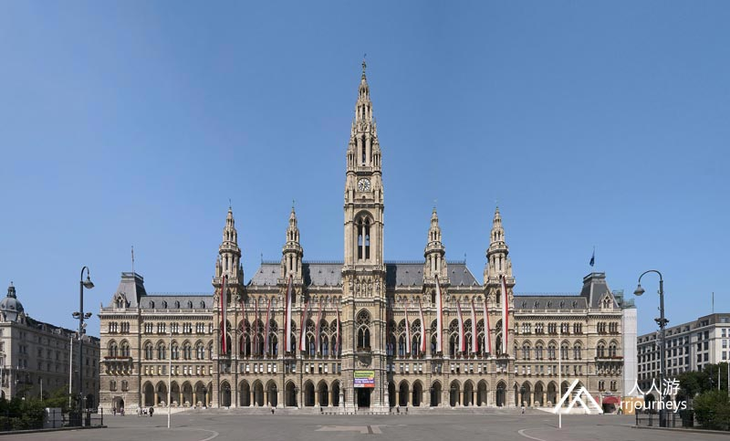
景点：美泉宫
美泉宫是巴洛克艺术建筑，曾是神圣罗马帝国、奥地利帝国、奥匈帝国和哈布斯堡王朝家族的皇宫，如今是维也纳最负盛名的旅游景点。 美泉宫的名字来源于神圣罗马帝国皇帝马蒂亚斯。1612年他狩猎饮用此处泉水，清爽甘冽，遂命名此泉为“美泉”，此后“美泉”成为这一地区的名称。1743年，奥地利女皇玛丽娅•特蕾西娅下令在此营建气势磅礴的美泉宫和巴洛克式花园，总面积2.6万平方米，仅次于法国的凡尔赛宫。
景点：维也纳国立歌剧院
维也纳国立歌剧院是欧洲最重要的歌剧院之一，拥有1709个座位，于1861年至1869年建造的。维也纳爱乐的乐手都是从歌剧院乐团里选拔的。
景点：圣斯蒂芬大教堂
圣斯蒂芬大教堂是维也纳罗马天主教大主教管区的母教堂， 罗马式和哥特式大教堂，建立在两座早期教堂的废墟上，1147年圣化的第一座教区教堂。作为维也纳最重要宗教场所，圣斯蒂芬大教堂见证了哈布斯堡和奥地利历史上的许多重要事件，并以其多彩色的瓦屋顶成为该市最知名的标志之一。
景点：城市公园-约翰·施特劳斯纪念碑
在约翰施特劳斯纪念碑坐落在维也纳城市公园，是出镜率最高的古迹之一维也纳。它是为了纪念库尔斯（KursalonHübner）旁边的“华尔兹国王” 约翰·施特劳斯（ Waltz King）儿子。
景点：霍夫堡宫殿
霍夫堡宫殿是位于奥地利首都维也纳的宫殿建筑。1279作为奥地利公爵的驻地。霍夫堡宫殿曾经是哈布斯堡王朝治下，奥地利帝国与奥匈帝国皇帝的冬宫。（夏宫是美泉宫）。今日的霍夫堡宫殿是奥地利总统官邸所在地。
DAY 2 维也纳- 布尔诺
入住地点：布尔诺
布尔诺
这里被誉为“摩拉维亚的曼彻斯特”，它位于捷克南摩拉维亚州的高地东麓，斯夫拉特卡河和斯维塔瓦河汇合处，是捷克的第二大城市。生物学家孟德尔名留青史的豌豆遗传实验就是在布尔诺进行的。 布尔诺是一座闻名遐迩的旅游城市，旅游资源丰富，名胜古迹众多，其中圣彼得与圣保罗教堂是最知名的地标建筑，为捷克国家文化古迹，摩拉维亚南部最宏伟的建筑和该市的主要地标之一。斯皮尔博城堡、圣雅各伯教堂、圣母领报和圣多默宗教堂等也是必游之地。
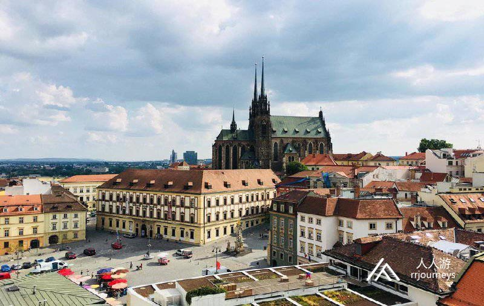
景点：斯皮尔博城堡
斯皮尔博城堡曾被称为“奥匈帝国最严酷的城堡”，它坐落在捷克南部摩拉维亚地区的布尔诺市的山顶上，这座古老的中世纪城堡是13世纪建造的拥有护城河的巴洛克式的堡垒。它在过去曾是一座监狱，被认为是整个奥匈帝国最严酷的监狱。爬到山顶后可以看到城市的美丽景色。
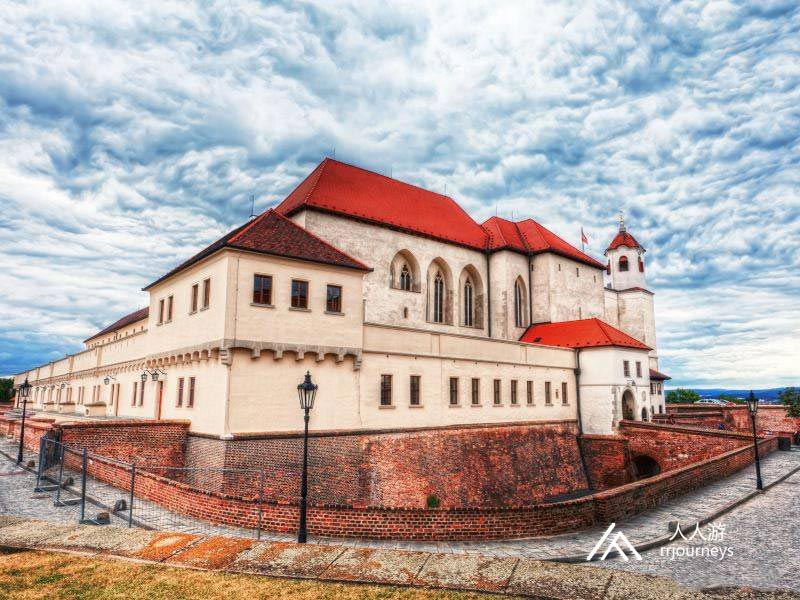
景点：圣彼得与圣保罗教堂
圣彼得与圣保罗教堂是布尔诺最著名的地标，始建于15世纪，最突出的就是那两个84米高的塔楼，在城内各处都能看到。圣保罗教堂每天上午11点就会敲响12下。传说17世纪，瑞典军队攻打布尔诺，扬言12点拿下，否则退兵。到了11点，敲钟人把11点敲成12点，瑞典军队撤退。自此教堂每天上午11点报时正午。
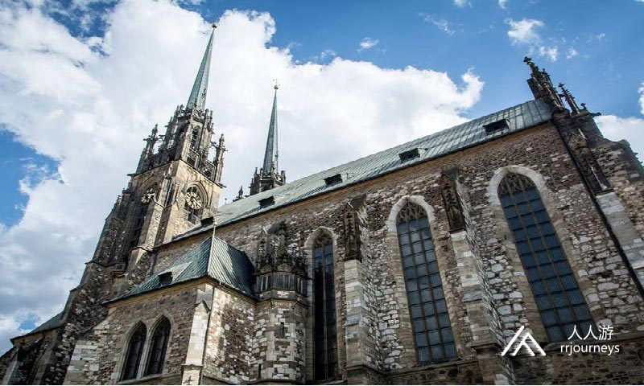
景点：旧市政厅
旧市政厅是布尔诺最古老的世俗建筑，也是一件值得回味深思的特殊艺术品。1510年，在拉德尼卡的塔楼上开了个门，并由高贵的哥特式门框框起来。较低的位置装饰着骑士的雕像，上方装饰着骑士和镇长的雕像。中心是正义女神像。塔楼入口上方正中有五个石雕柱，正中间的石雕柱的尖端歪了，据传1511年建筑师未获得足够的酬劳而报复，却没想到这个故意的失误成就了它的特殊之处。
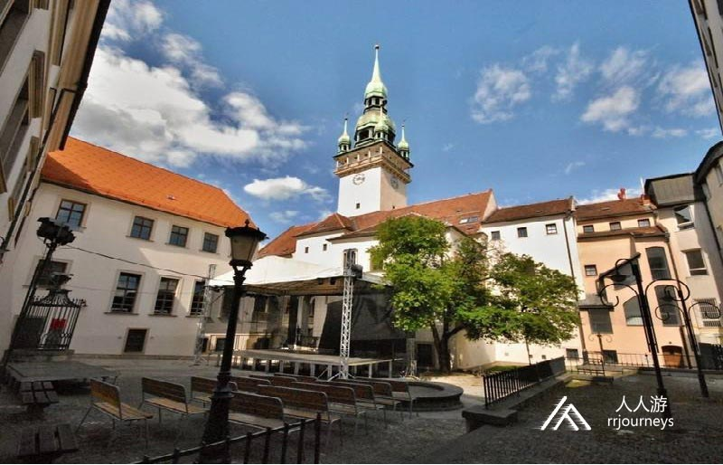
景点：图根哈特别墅
图根哈特别墅位于捷克城市布尔诺的图根哈特，是捷克为数不多的世界文化遗产之一。1938年的建筑，今天看起来依旧很现代，各种现代化功能，风景也是绝佳。据说这是欧洲现代主义功用建筑的鼻祖，设计师是德国人。这里建筑的花园是远眺布尔诺城的好地方。路德维希•密斯•凡•德•罗是这栋房子的建筑师-这是有史以来最杰出的建筑师之一。
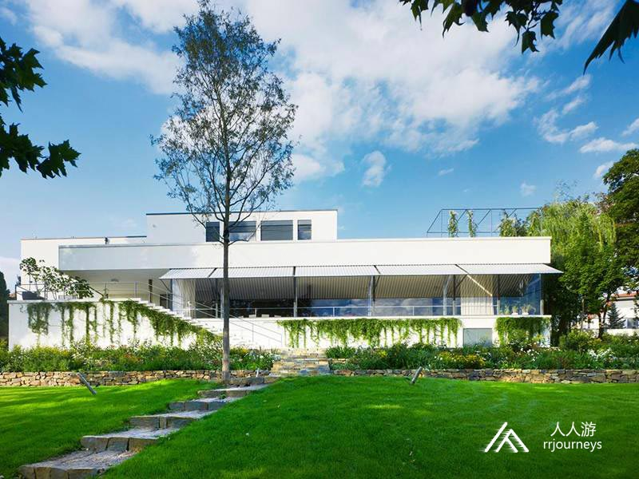
DAY 3 布尔诺- 布拉迪斯拉发-布达佩斯
返回布达佩斯
布拉迪斯拉发
布拉迪斯拉发是斯洛伐克的首都。人口约为430,000， 它是欧洲较小的首都之一，但仍然是该国最大的城市。布拉迪斯拉发位于斯洛伐克西南部，多瑙河和莫拉瓦河的左岸。与奥地利和匈牙利接壤，是唯一一个首都与两个国家接壤的主权国家。它是斯洛伐克的政治，文化和经济中心，总统，行政长官和议会的所在地。2017年，布拉迪斯拉发按人均GDP仅次于汉堡和卢森堡市排名为第三。布拉迪斯拉发每年接待约100万游客。这个城市的历史受到许多国家和宗教的影响。从1536年到1783年，这是匈牙利王国的加冕场所，立法中心和首都，也曾是许多斯洛伐克，匈牙利和德国历史人物的住所。 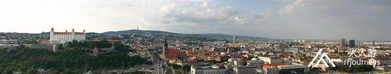 景点：圣伊丽莎白教堂 圣伊丽莎白教堂位于老城东侧。它色彩缤纷马赛克外墙和蓝釉屋顶的装饰，采用了淡雅的浅蓝色，故而俗称“蓝色教堂”。
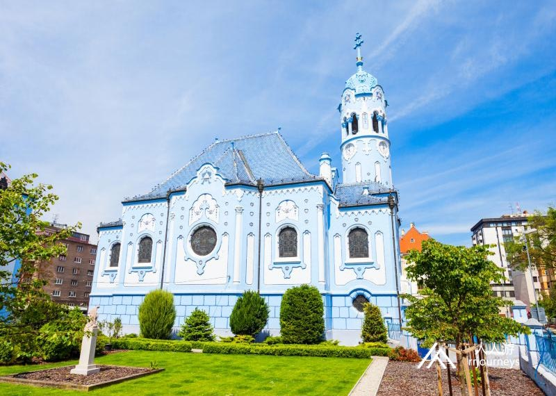 这座精美的新艺术风格的建筑是为了纪念13世纪时匈牙利国王的安德鲁二世的女儿伊丽莎白公主而建的,她是在这座城市（当时叫普雷斯堡城堡）长大的。圣伊丽莎白教堂是匈牙利分离主义风格。
景点：布拉迪斯拉发城堡 布拉迪斯拉发城堡这座带有四座角楼的大型矩形建筑，坐落在布拉迪斯拉发中部，多瑙河正上方的小喀尔巴阡山脉的一个孤立岩石的山丘上。由于其规模和位置，它已经成为这座城市数百年来的主要特征。土耳其人占领布达佩斯期间，这里是匈牙利王室的避居地。城堡曾在1811年的火灾中被焚毁。20世纪50年代完成了重建。城堡里面还有一座历史博物馆。
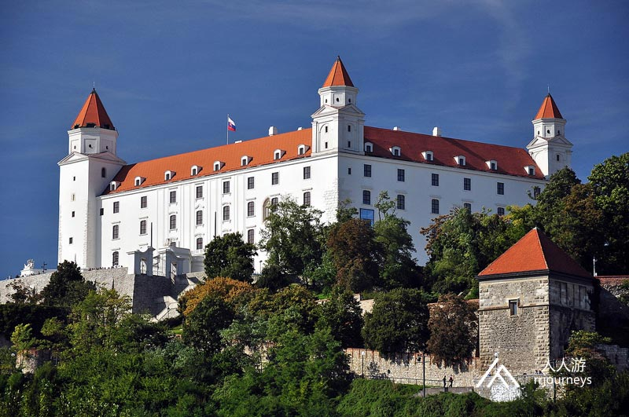 景点：主广场，罗兰喷泉及老市政厅
景点：新桥 新桥跨越了多瑙河，将老城和新城连接在一起，是布拉迪斯拉发多瑙河上的第二座桥梁。这座桥建于1972年，石材大部分来自拆除古城中犹太会堂及其它建筑剩余的砖石，南端有一个观景天台。1993年至2012年间，它是世界上最长的一塔和一架斜拉桥。桥塔的西侧支柱设有一个紧急楼梯，有430个楼梯。新桥是一座非对称斜拉桥，主跨长度为303 m，总长度为430.8 m，宽度为21 m，重量为537t。一个特别吸引人的地方是桥的84.6 m塔顶上的飞碟形结构，里面有一个观景台和一间餐厅。餐厅供应传统的斯洛伐克和国际美食，并将其美食描述为“ 地中海人 ”。它在2011年获得了“年度最佳餐厅”奖。 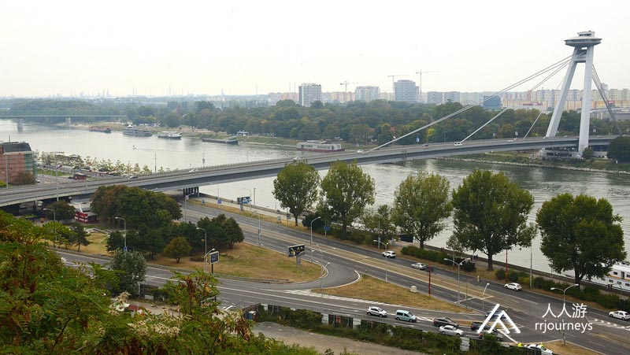 景点：布拉迪斯拉发旗舰店（餐厅） 布拉迪斯拉发旗舰店号称是欧洲最大的餐厅，味道鲜美，食材量大，符合中国人口味。吃货们都说，“到了布拉迪斯拉发，唯一给你留下深刻印象的，就是这个欧洲最大的餐厅”。有很多欧洲当地的居民，为了品尝这家餐厅的美食，甚至不惜开车行驶400公里以上，布拉迪斯拉发旗舰店生产的手工啤酒，色泽浑厚，回香甘甜，也是欧洲最优秀的手工啤酒之一，售价从原来的1.5欧元/升一直上涨到5欧元/升。
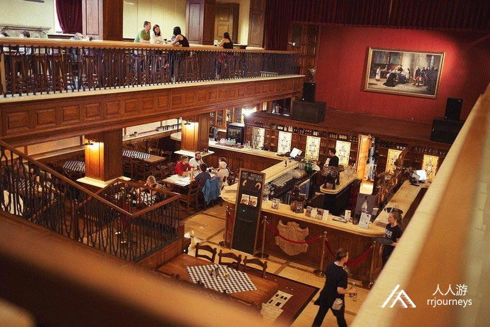
Czech Republic: Europe’s Most Popular Holiday Destination
Since the fall of communism in 1989, the Czech Republic – and its capital in particular – has evolved into one of Europe’s most popular travel destinations. Everyone who visits the Czech Republic starts with Prague, the cradle of Czech culture and one of Europe’s most fascinating cities. Prague offers a near-intact medieval core of Gothic architecture that can transport you back 500 years. Czech Republic is also known as the place ‘where Beer is God’. Since the invention of Pilsner Urquell in 1842, the Czechs have been famous for producing some of the world's finest brews… So don’t forget to enjoy the view with the best beer in the world in your hand.
Vienna: World’s Top City for Quality of Life
Vienna, Austria’s capital, lies in the country’s east on the Danube River. Its artistic and intellectual legacy was shaped by residents including Mozart, Beethoven and Sigmund Freud. The city is also known for its Imperial palaces, including Schönbrunn, the Habsburgs’ summer residence.
Slovakia: The Beauty of Nature
Right in the heart of Europe, Slovakia is a land of castles and mountains, occasionally punctuated by industrial sprawl. More than a quarter-century after Czechoslovakia's break-up, Slovakia has emerged as a self-assured, independent nation. Capital city Bratislava draws visitors to its resplendent old town and tankard-clanking drinking culture. But Slovakia shines brightest for lovers of history and the outdoors.
时间
地点
景点（可以 +/- ）
入住地点
第一天
布达佩斯出发243公里
Vienna
奥地利
霍夫堡, Schönbrunn Palace, 斯蒂芬主教座堂, 维也纳国立歌剧院, 美景宫, 米歇尔广场
第二天
136公里
Brno
捷克
斯皮尔博城堡, 旧市政厅, Macocha峡谷, 图根哈特别墅, Lužánky公园, 摩拉维亚喀斯特, Sloupsko-šošůvské jeskyně
第三天
131公里
200公里到布达佩斯
布拉迪斯拉发 Bratislava
斯洛伐克
杰文古堡 (权力的游戏电视节目地点), 布拉迪斯拉发城堡, 库米儿, 大主教宫殿, 布拉提斯拉瓦旧市政厅, 圣米哈尔门, 圣伊丽莎白教堂, 斯拉温, 赫维兹多斯拉夫广场, 罗兰喷泉, Danubiana美术馆
-
6天5夜乌克兰小众深度游
7天6夜克罗地亚、波黑小众
5天4夜波兰、斯洛伐克小众
四天三夜奥地利、斯洛文尼亚
匈牙利最大的滑雪场一日游
6天5夜，奥地利滑雪自由行
7天6夜，奥地利旅游滑雪自
4天3夜，奥地利滑雪自由行
Copyright 2020 www.rrjourneys.com
人人游 旅游官方网站 版权所有 All Rights Reserved